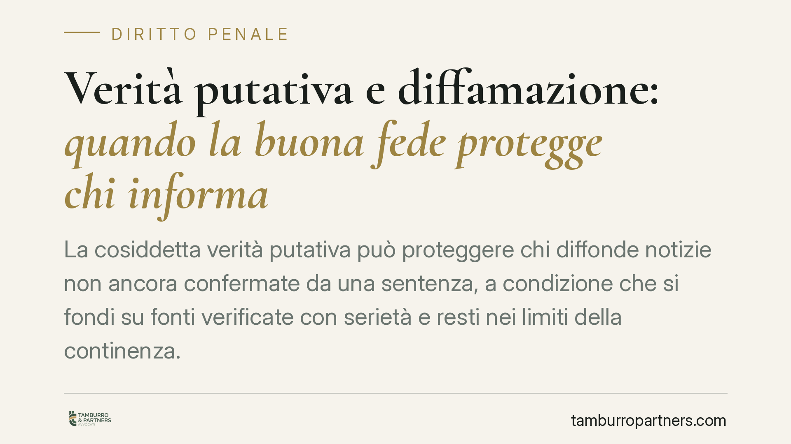

Verità putativa e diffamazione: quando la buona fede protegge chi informa
La cosiddetta verità putativa può proteggere chi diffonde notizie non ancora confermate da una sentenza, a condizione che si fondi su fonti verificate con serietà e resti nei limiti della continenza. Non è una novità assoluta, ma la conferma di un orientamento consolidato che vale sia in sede penale sia civile. Vediamo quando l'esimente opera davvero.

Il caso e una premessa sugli estremi
Una recente pronuncia della Cassazione è tornata sul tema della verità putativa quale limite alla responsabilità per diffamazione. Prima di entrare nel merito, una nota di trasparenza: gli estremi dell'ordinanza (numero e data) diffusi da alcune fonti divulgative appaiono cronologicamente incoerenti e non risultano al momento verificabili. Trattiamo perciò il principio giuridico in sé, che è stabile e ben radicato, senza attribuirlo a un provvedimento i cui riferimenti non siamo in grado di confermare.
Il principio è questo: chi diffonde un'informazione poi rivelatasi non pienamente esatta non risponde necessariamente di diffamazione, se al momento della pubblicazione aveva ragionevoli motivi per ritenerla vera, avendo controllato le fonti con la diligenza dovuta.
Inquadramento normativo
La diffamazione è reato ai sensi dell'art. 595 del codice penale, che punisce chi offende l'altrui reputazione comunicando con più persone. Lo stesso fatto può generare, in parallelo, una responsabilità civile per il danno arrecato, ai sensi dell'art. 2043 del codice civile: chi si ritiene diffamato può quindi agire in sede penale, in sede civile, o in entrambe. È utile tenere distinti i due piani, perché la valutazione dei presupposti è analoga ma le conseguenze e gli oneri probatori differiscono.
In entrambi gli ambiti opera l'esimente del diritto di cronaca e di critica, che rende lecita la diffusione di notizie astrattamente lesive dell'onore. La giurisprudenza, a partire dalle Sezioni Unite (Cass. S.U. n. 5259/1984, il cosiddetto "decalogo del giornalista"), ne ha fissato tre requisiti concorrenti:
- verità del fatto, oggettiva o quantomeno putativa;
- interesse pubblico alla conoscenza della notizia;
- continenza, cioè misura e correttezza nell'esposizione, senza attacchi personali gratuiti.
La verità putativa è la declinazione soggettiva del primo requisito: non basta credere che una notizia sia vera, occorre aver operato un controllo serio e documentabile delle fonti. Si tratta di un orientamento consolidato, non di una svolta improvvisa.
Implicazioni pratiche
Il punto decisivo è probatorio. Chi pubblica una notizia si trova, in caso di contenzioso, a dover dimostrare non tanto che la notizia era vera in senso assoluto, quanto che aveva svolto verifiche adeguate prima di diffonderla.
Da qui alcune conseguenze concrete. La mancanza di una sentenza definitiva su un fatto (una condanna, un accertamento) non rende automaticamente illecito parlarne: ciò che conta è la ragionevolezza e la tracciabilità della verifica compiuta. Al contrario, l'aggiunta di giudizi denigratori, insinuazioni o toni gratuitamente offensivi fa venir meno la continenza e può far cadere l'intera protezione, anche quando il nucleo della notizia fosse vero.
Questo interessa non solo i giornalisti, ma chiunque diffonda contenuti a più persone: gestori di pagine social, blogger, professionisti che comunicano online, ma anche privati che condividono informazioni su terzi in gruppi o forum.
Cosa fare in concreto
- Verifica le fonti prima di pubblicare: incrocia almeno due fonti indipendenti e privilegia documenti ufficiali quando disponibili.
- Conserva le prove della verifica: salva e-mail, screenshot, atti e link, con data. In giudizio la tracciabilità del controllo è spesso l'elemento che regge l'esimente.
- Distingui fatti e opinioni: riporta i fatti in modo neutro e presenta i giudizi come tali, evitando toni denigratori.
- Rispetta la continenza: elimina epiteti, insinuazioni e dettagli superflui che colpiscono la persona senza aggiungere informazione utile.
- Valuta l'interesse pubblico: chiediti se la notizia serve davvero alla collettività o se incide solo sulla sfera privata altrui.
Davanti a una contestazione, penale o civile, o prima di diffondere un contenuto delicato, una valutazione preventiva da parte di un legale può aiutare a inquadrare correttamente rischi e margini di liceità.
Disclaimer
Contributo informativo a cura di Tamburro & Partners Avvocati. Non costituisce parere legale.
Ogni condominio ha una storia a sé.
Se gestisci un'amministrazione e vuoi un confronto su una specifica questione condominiale, scrivi allo studio. Ti rispondiamo entro un giorno lavorativo.